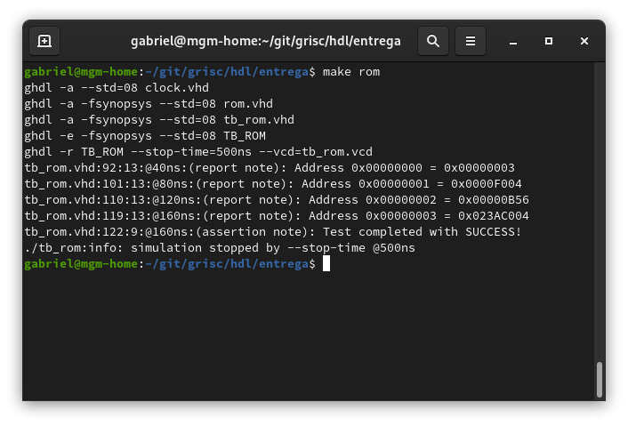
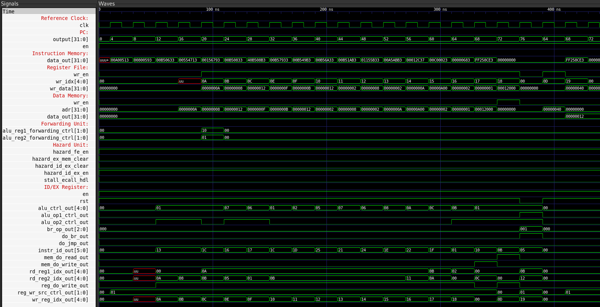
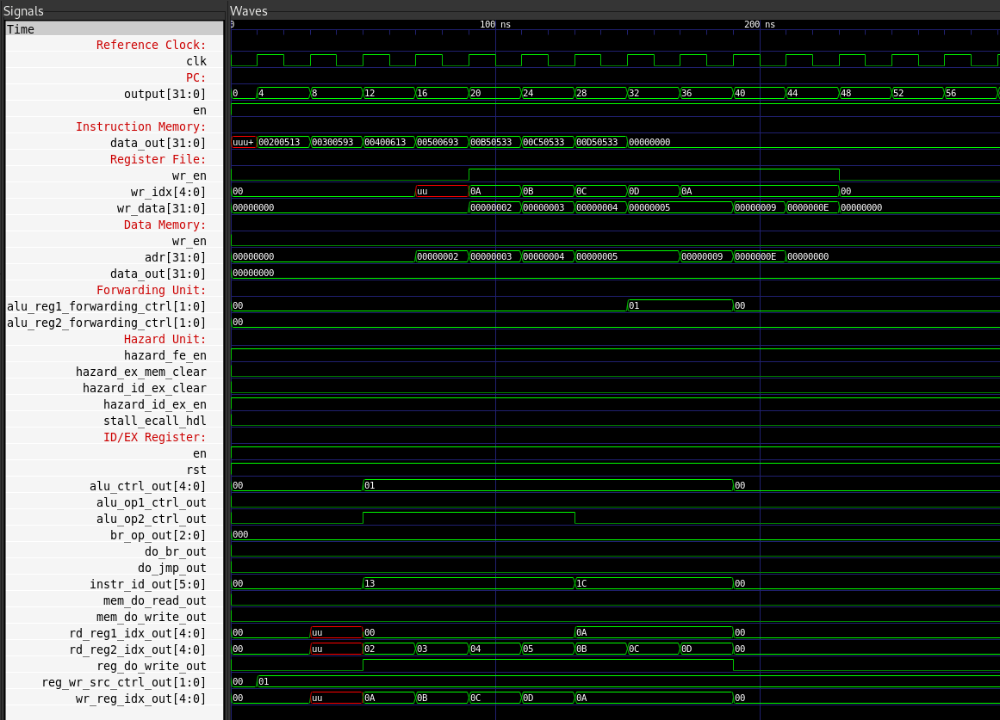
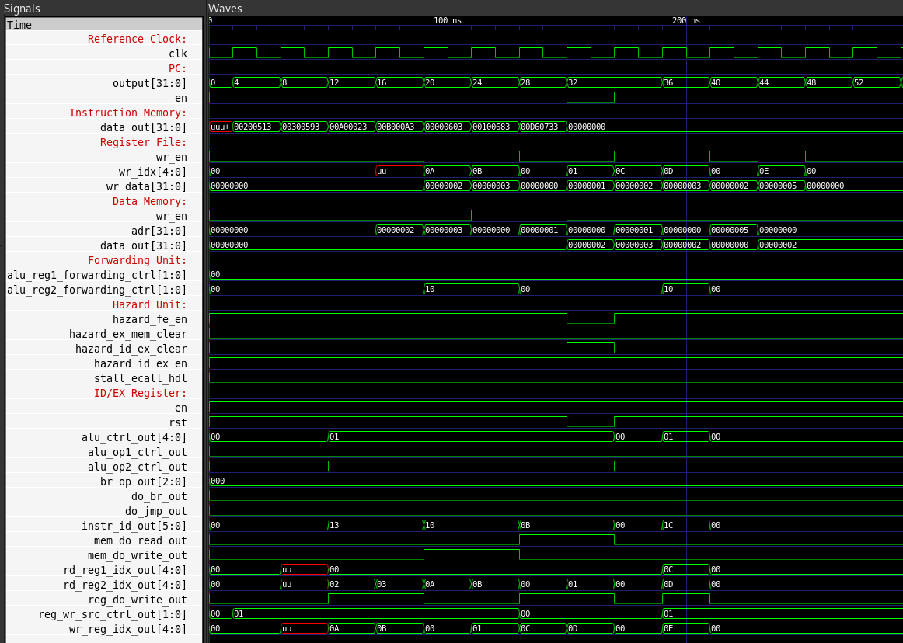
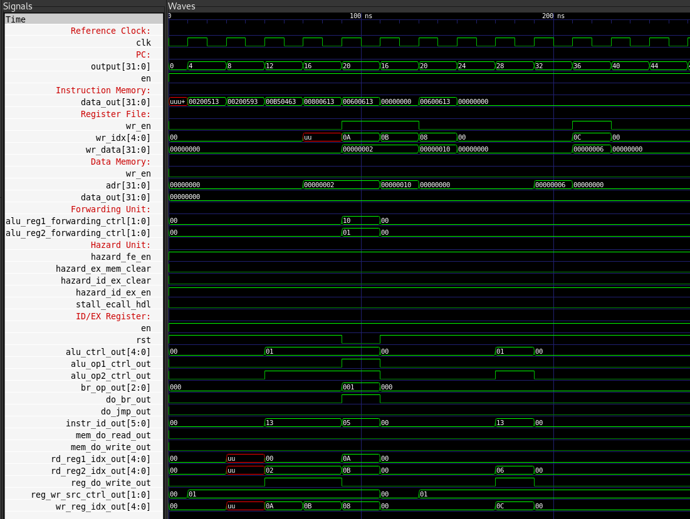

Simulation and verification
Simulation environment
The project uses GHDL, an open-source VHDL analyzer, compiler, and simulator, to simulate the individual blocks and the complete processor [2]. Test programs are loaded from files into simulated instruction memory. Test results can be written to text files or displayed in the simulator output.
{kind=link}

Fig. 2 Example result from the instruction-memory (ROM) testbench.
Internal signals can also be inspected as waveforms with GTKWave [5].
ISA test program
The following Assembly program exercises a representative selection of the implemented ISA, including arithmetic, logical, memory, and branch instructions.
addi x10, x0, 10
addi x11, x0, 8
add x12, x10, x11
xori x14, x10, 5
ori x15, x10, 1
add x16, x10, x11
sub x17, x10, x11
and x18, x10, x11
xor x19, x10, x11
or x20, x10, x11
sll x21, x10, x11
srl x22, x10, x17
slt x23, x11, x10
lui x24, 18
test:
sb x12, 0(x0)
lb x13, 0(x0)
beq x11, x18, test
The program is converted to 32-bit hexadecimal machine instructions before it is loaded into instruction memory. The captured waveforms show the processor executing this program.
{kind=link}

Fig. 3 Waveforms captured while running the ISA test program.
Forwarding
Back-to-back dependent additions verify that the forwarding unit supplies a newly computed result to the next instruction without waiting for write-back.
addi x10, x0, 2
addi x11, x0, 3
addi x12, x0, 4
addi x13, x0, 5
add x10, x10, x11
add x10, x10, x12
add x10, x10, x13
{kind=link}

Fig. 4 Waveforms from a forwarding test.
Data hazard
The following sequence loads two bytes and immediately consumes the loaded values, exercising the data-hazard detection logic.
addi x10, x0, 2
addi x11, x0, 3
sb x10, 0(x0)
sb x11, 1(x0)
lb x12, 0(x0)
lb x13, 1(x0)
add x14, x12, x13
{kind=link}

Fig. 5 Waveforms from a data-hazard test.
Branch control flow
This test verifies a taken beq branch. The assignment that would set x12 to 8 is skipped; execution continues at test and sets it to 6.
addi x10, x0, 2
addi x11, x0, 2
beq x10, x11, test
addi x12, x0, 8
test:
addi x12, x0, 6
{kind=link}

Fig. 6 Waveforms from a branch-control-flow test.